괴담 영상 보관함
매주 월·목 저녁, 한 주제를 30분 동안 들려주는 미스터리·괴담 영상이 자동으로 만들어집니다. 유튜브 연결을 해 두면 유튜브에도 자동으로 올라갑니다 (구글 심사 전에는 비공개 → 「유튜브 공개 설정」 눌러서 공개로 바꾸기).
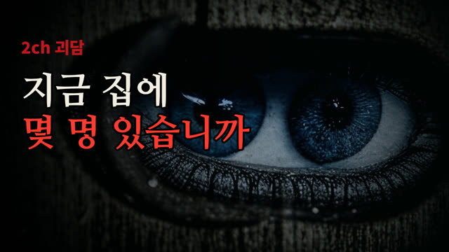
"지금 집에 몇 명 있습니까" 문 밑으로 들어온 앙케이트, 대답하면 한 명씩 늘어난다 | 2ch 실시간 괴담 [일본 괴담]

제목·설명·태그 보기
[제목] "지금 집에 몇 명 있습니까" 문 밑으로 들어온 앙케이트, 대답하면 한 명씩 늘어난다 | 2ch 실시간 괴담 [일본 괴담] [설명] 이천팔년, 일본 익명 게시판에 올라온 글. 혼자 사는 대학생의 현관문 아래로 매일 밤 주민 앙케이트가 들어옵니다. "이 집에는 몇 명이 살고 있습니까." 1이라고 적은 다음 날, 누군가 그 숫자를 고쳐 놓았습니다. "틀렸습니다. 둘입니다." 그리고 십 년 뒤, 전혀 다른 사람이 같은 앙케이트를 받았습니다. 📖 목차 0:00 시작 0:56 1부. 첫 번째 앙케이트 2:27 2부. 없는 계단 3:46 3부. 숫자가 늘어난다 5:08 4부. 마지막 질문 6:35 5부. 십 년 뒤 7:27 6부. 그리고 지금 🔔 매주 월·목 저녁 8시 반, 새 괴담이 올라옵니다. 구독하고 알림 설정해 두세요! 👉 https://www.youtube.com/channel/UCTGBcatcPQOoK4NsiHCukuw?sub_confirmation=1 📺 같이 보면 좋은 채널 · Dreamcore Sleep — 괴담 듣고 잠 안 올 때, 잠 오는 음악 https://www.youtube.com/@Moonsleep-g1c · 세상의 모든 이야기 — 매일 1분 경제·생활 뉴스 https://www.youtube.com/@세상의모든이야기g1-c ※ 이 영상은 2ch 괴담 형식으로 구성한 창작 괴담(픽션)입니다. ※ 낭독: AI 음성 · 배경음·화면: 자체 제작 #일본괴담 #2ch괴담 #괴담 #무서운이야기 #앙케이트 #공포라디오 [태그] 일본 괴담, 2ch 괴담, 괴담, 무서운 이야기, 앙케이트 괴담, 실시간 괴담, 사고물건, 공포 라디오, 잠잘 때 듣는 괴담, 레전드 괴담, 일본 공포
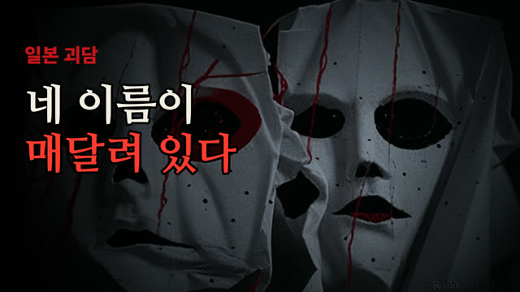
"이 마을 이름은 검색하지 마세요" 사람 이름이 적힌 인형 수백 개가 매달린 산 | 이름을 가져가는 마을 [일본 괴담]

제목·설명·태그 보기
[제목] "이 마을 이름은 검색하지 마세요" 사람 이름이 적힌 인형 수백 개가 매달린 산 | 이름을 가져가는 마을 [일본 괴담] [설명] 나무 한 그루에 하얀 종이 인형이 수백 개. 인형마다 사람 이름이 적혀 있었습니다. 1989년 오컬트 잡지 독자 투고, 2003년 일본 게시판의 실시간 글, 2016년 실종된 방송인의 마지막 생방송, 그리고 연락이 끊긴 기자의 USB. 서로 상관없어 보이는 다섯 개의 기록이, 전부 일본 긴키 지방의 같은 산속 마을을 가리킵니다. "밤에 누가 이름을 부르면, 대답하지 마세요." 📖 목차 0:00 시작 1:04 1부. 첫 번째 기록, 독자 투고 2:38 2부. 가타시로 3:53 3부. 두 번째 기록, 게시판 6:12 4부. 세 번째 기록, 마지막 방송 10:04 5부. 네 번째 기록, 향토 자료 12:06 6부. 다섯 번째 기록, 기자의 메모 13:50 7부. 그리고, 이 영상 🔔 매주 월·목 저녁 8시 반, 새 괴담이 올라옵니다. 구독하고 알림 설정해 두세요! 👉 https://www.youtube.com/channel/UCTGBcatcPQOoK4NsiHCukuw?sub_confirmation=1 📺 같이 보면 좋은 채널 · Dreamcore Sleep — 괴담 듣고 잠 안 올 때, 잠 오는 음악 https://www.youtube.com/@Moonsleep-g1c · 세상의 모든 이야기 — 매일 1분 경제·생활 뉴스 https://www.youtube.com/@세상의모든이야기g1-c ※ 이 영상은 기록 형식으로 구성한 창작 괴담(픽션)입니다. 등장하는 마을·인물·사건은 실제와 관계없습니다. ※ 낭독: AI 음성 · 배경음·화면: 자체 제작 #일본괴담 #괴담 #무서운이야기 #긴키지방 #가타시로 #공포라디오 [태그] 일본 괴담, 괴담, 무서운 이야기, 긴키 지방, 가타시로, 形代, 이름을 부르는, 인형 괴담, 실종, 2ch 괴담, 모큐멘터리 괴담, 공포 라디오, 잠잘 때 듣는 괴담, 레전드 괴담
돈을 낸 사람만 들어갈 수 있는 붉은 방 | 딥웹 레드룸의 진실 [다크웹 괴담]

제목·설명·태그 보기
[제목] 돈을 낸 사람만 들어갈 수 있는 붉은 방 | 딥웹 레드룸의 진실 [다크웹 괴담] [설명] '당신은… 좋아합니까?' 닫아도 닫아도 다시 뜨는 빨간 팝업 창. 일본 인터넷 초창기의 괴담 '붉은 방'은 십여 년 뒤, 다크웹의 전설 '레드룸'으로 다시 태어났습니다. 돈을 낸 사람만 들어갈 수 있다는 비밀 생중계 방. 카운트다운이 끝나는 새벽 3시, 한 대학원생이 그 주소에 접속합니다. 레드룸은 정말 존재할까? 괴담과 현실 사이, 딥웹 레드룸 이야기. 📖 목차 0:00 시작 0:50 1부. 당신은 좋아합니까 1:54 2부. 붉은 방의 저주 2:45 3부. 다크웹의 레드룸 3:33 4부. 카운트다운 4:26 5부. 붉은 화면 5:19 6부. 입장 버튼 6:11 7부. 아무것도 없는 방 6:59 8부. 레드룸은 진짜일까 7:49 9부. 한 달 뒤 8:31 10부. 닫아도 닫아도 9:19 11부. 꺼진 화면 10:05 12부. 마지막 이야기 🔔 매주 월·목 저녁 8시 반, 새 괴담이 올라옵니다. 구독하고 알림 설정해 두세요! 👉 https://www.youtube.com/channel/UCTGBcatcPQOoK4NsiHCukuw?sub_confirmation=1 📺 같이 보면 좋은 채널 · Dreamcore Sleep — 괴담 듣고 잠 안 올 때, 잠 오는 음악 https://www.youtube.com/@Moonsleep-g1c · 세상의 모든 이야기 — 매일 1분 경제·생활 뉴스 https://www.youtube.com/@세상의모든이야기g1-c ※ 이야기 속 인물과 사건은 인터넷 괴담을 바탕으로 만든 창작(픽션)입니다. 다크웹 레드룸은 실제로 존재가 확인된 적이 없으며, 대부분 돈을 노린 사기로 알려져 있습니다. ※ 낭독: AI 음성 · 배경음·화면: 자체 제작 #레드룸 #딥웹 #다크웹 #괴담 #인터넷괴담 #무서운이야기 [태그] 레드룸, 딥웹, 다크웹, 딥웹 괴담, 다크웹 괴담, 붉은 방, 赤い部屋, 인터넷 괴담, 일본 괴담, 무서운 이야기, 공포 라디오, 잠잘 때 듣는 괴담
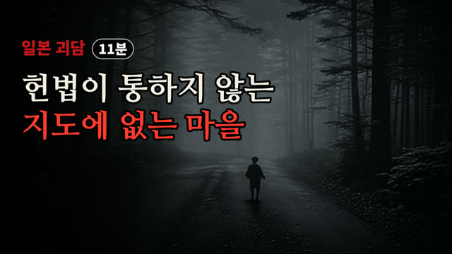
"이 앞, 일본국 헌법은 통하지 않음" 터널 너머 지도에 없는 마을 | 이누나키 마을 [일본 괴담]

제목·설명·태그 보기
[제목] "이 앞, 일본국 헌법은 통하지 않음" 터널 너머 지도에 없는 마을 | 이누나키 마을 [일본 괴담] [설명] 후쿠오카의 산속, 콘크리트 블록으로 막아 버린 옛 터널. 그 너머에는 지도에 없는 마을이 있고, 입구에는 '이 앞, 일본국 헌법은 통하지 않음'이라는 팻말이 서 있다고 합니다. 여름밤 담력 시험을 떠난 대학생 세 명. 막힌 터널 안쪽에서 누군가 벽을 두드리기 시작합니다. 일본에서 가장 무서운 장소로 불리는 구 이누나키 터널과 이누나키 마을 괴담, 그리고 그 뒤에 숨은 진짜 이야기. 📖 목차 0:00 시작 0:44 1부. 개가 우는 고개 1:48 2부. 지도에 없는 마을 2:36 3부. 여름밤의 담력 시험 3:26 4부. 막힌 입구 4:24 5부. 안쪽의 소리 5:17 6부. 돌아가는 길이 없다 6:13 7부. 팻말 7:01 8부. 문 앞의 사람들 7:58 9부. 도망 8:45 10부. 그날 이후 9:28 11부. 진짜 이누나키 마을 10:24 12부. 그래도 사람들이 찾아가는 곳 🔔 매주 월·목 저녁 8시 반, 새 괴담이 올라옵니다. 구독하고 알림 설정해 두세요! 👉 https://www.youtube.com/channel/UCTGBcatcPQOoK4NsiHCukuw?sub_confirmation=1 📺 같이 보면 좋은 채널 · Dreamcore Sleep — 괴담 듣고 잠 안 올 때, 잠 오는 음악 https://www.youtube.com/@Moonsleep-g1c · 세상의 모든 이야기 — 매일 1분 경제·생활 뉴스 https://www.youtube.com/@세상의모든이야기g1-c ※ 이 영상은 인터넷에 전해지는 괴담을 재구성한 이야기(픽션)입니다. ※ 낭독: AI 음성 · 배경음·화면: 자체 제작 ※ 옛 터널과 주변은 출입 금지 구역입니다. 절대 찾아가지 마세요. #이누나키마을 #일본괴담 #이누나키터널 #괴담 #무서운이야기 #도시전설 [태그] 이누나키 마을, 이누나키 터널, 犬鳴村, 犬鳴トンネル, 일본 괴담, 일본 심령 스팟, 괴담, 무서운 이야기, 도시전설, 공포 라디오, 잠잘 때 듣는 괴담, 괴담 파일
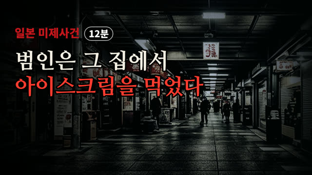
일가족을 해친 범인은 그 집에서 아이스크림을 먹고 컴퓨터를 켰다 | 세타가야 일가 살인사건 [일본 미제사건]

제목·설명·태그 보기
[제목] 일가족을 해친 범인은 그 집에서 아이스크림을 먹고 컴퓨터를 켰다 | 세타가야 일가 살인사건 [일본 미제사건] [설명] 2000년 12월 30일 밤, 도쿄 세타가야의 한 주택. 가족 네 명이 세상을 떠난 그 집에서, 범인은 몇 시간이나 머물렀습니다. 냉장고의 아이스크림을 먹고, 보리차를 마시고, 새벽 1시가 넘어 컴퓨터를 켰습니다. 지문, 피, 옷, 흉기, 신발 크기, 혈액형, 유전자까지. 일본 경찰 역사상 가장 많은 증거를 남겼지만, 25년이 지난 지금도 이름만은 아무도 모릅니다. 일본 최악의 미제사건, 세타가야 일가 살인사건 이야기. 📖 목차 0:00 시작 0:58 1부. 평범한 연말 2:13 2부. 밤 열한 시 3:11 3부. 떠나지 않은 남자 4:34 4부. 아침 열 시 사십 분 5:24 5부. 소파 위의 열 가지 6:30 6부. 백삼십 벌의 스웨트 셔츠 7:31 7부. 가방 속의 모래 8:19 8부. 피가 말해 준 것 9:18 9부. 사라진 공소시효 10:10 10부. 아직 서 있는 집 10:47 11부. 그는 지금 어디에 11:34 12부. 마지막으로 🔔 매주 월·목 저녁 8시 반, 새 괴담이 올라옵니다. 구독하고 알림 설정해 두세요! 👉 https://www.youtube.com/channel/UCTGBcatcPQOoK4NsiHCukuw?sub_confirmation=1 📺 같이 보면 좋은 채널 · Dreamcore Sleep — 괴담 듣고 잠 안 올 때, 잠 오는 음악 https://www.youtube.com/@Moonsleep-g1c · 세상의 모든 이야기 — 매일 1분 경제·생활 뉴스 https://www.youtube.com/@세상의모든이야기g1-c ※ 이 영상은 공개된 수사 자료와 언론 보도를 바탕으로 정리했습니다. 세상을 떠난 가족과 유족을 존중하며, 잔혹한 묘사는 하지 않았습니다. ※ 낭독: AI 음성 · 배경음·화면: 자체 제작 (장면 그림은 AI로 만든 이미지이며 실제 현장 사진이 아닙니다) #세타가야사건 #일본미제사건 #미제사건 #실화 #일본살인사건 #미스터리 [태그] 세타가야 일가 살인사건, 세타가야 사건, 世田谷一家殺害事件, 일본 미제사건, 미제사건, 일본 살인사건, 실화 미스터리, 미스터리, 사건 파일, 무서운 이야기, 잠잘 때 듣는 미스터리, 공포 라디오
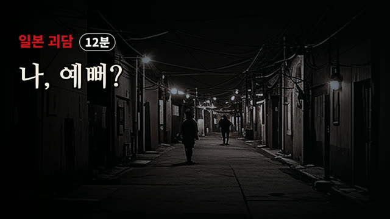
"나, 예뻐?" 마스크를 내린 여자의 입은 귀까지 찢어져 있었다 | 입 찢어진 여자 [일본 괴담]

제목·설명·태그 보기
[제목] "나, 예뻐?" 마스크를 내린 여자의 입은 귀까지 찢어져 있었다 | 입 찢어진 여자 [일본 괴담] [설명] 해가 진 골목길, 하얀 마스크를 쓴 키 큰 여자가 아이에게 묻습니다. "나, 예뻐?" 1979년 일본 기후현에서 시작된 소문은 몇 달 만에 일본 전역으로 번졌고, 학교는 아이들을 무리 지어 하교시켰으며 경찰은 골목을 순찰했습니다. 포마드를 세 번 외치면 도망간다는 이야기, 에도 시대의 비극, 실제로 붙잡힌 사람들까지. 한 나라를 실제로 멈춰 세운 도시전설, 입 찢어진 여자(구치사케온나) 이야기. 📖 목차 0:00 시작 1:03 1부. 기후의 봄 1:56 2부. 번져 가는 소문 2:54 3부. 그녀의 질문 3:47 4부. 살아남는 방법 4:44 5부. 그녀는 누구인가 5:37 6부. 멈춰 선 학교들 6:30 7부. 실제로 붙잡힌 사람들 7:15 8부. 어느 학원 버스 8:27 9부. 사라진 소문 9:11 10부. 돌아온 여자 10:00 11부. 그 질문의 의미 10:43 12부. 오늘 밤 골목에서 ※ 이 영상은 도시전설과 당시 보도를 바탕으로 재구성한 이야기입니다. 괴담 부분은 창작·각색입니다. ※ 낭독: AI 음성 · 배경음·화면: 자체 제작 #입찢어진여자 #구치사케온나 #일본괴담 #도시전설 #괴담 #무서운이야기 #공포라디오 [태그] 입 찢어진 여자, 구치사케온나, 口裂け女, 빨간 마스크, 일본 괴담, 도시전설, 괴담, 무서운 이야기, 1979, 공포 라디오, 잠잘 때 듣는 괴담, 괴담 파일
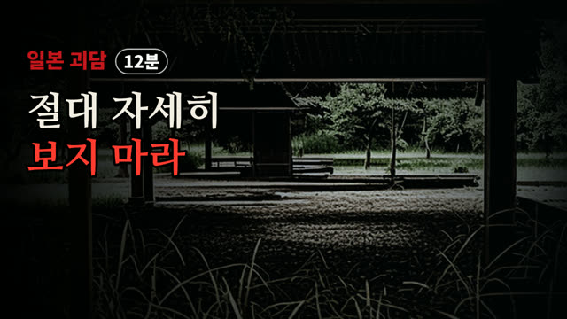
논 한가운데서 꿈틀거리는 하얀 것, 절대 자세히 보지 마라 | 쿠네쿠네 [일본 괴담]

제목·설명·태그 보기
[제목] 논 한가운데서 꿈틀거리는 하얀 것, 절대 자세히 보지 마라 | 쿠네쿠네 [일본 괴담] [설명] 바람 한 점 없는 한여름 오후, 시골 할머니 댁 툇마루에서 형제가 본 것. 논 한가운데서 사람이 흉내 낼 수 없는 몸짓으로 꿈틀거리는 하얀 무언가. 할아버지의 망원경으로 그것을 들여다본 형은 "알고 싶지 않았어"라는 말을 남기고, 다시는 예전으로 돌아오지 못했습니다. 2003년 일본 인터넷 게시판에서 시작된 괴담, 쿠네쿠네. 멀리서 보는 건 괜찮지만, 그것이 무엇인지 알아 버리면 안 됩니다. 📖 목차 0:00 시작 1:08 1부. 할머니 댁의 여름 2:01 2부. 바람 없는 오후 3:00 3부. 형의 망원경 3:55 4부. 알아 버린 얼굴 4:40 5부. 할아버지의 고함 5:34 6부. 그날 밤 6:28 7부. 할아버지가 해 준 이야기 7:28 8부. 떠나는 날 8:35 9부. 비슷한 이야기들 9:18 10부. 사람들의 추측 10:04 11부. 이해한다는 것 10:46 12부. 바람 없는 날 ※ 이 영상은 인터넷에 전해지는 괴담을 재구성한 이야기(픽션)입니다. ※ 낭독: AI 음성 · 배경음·화면: 자체 제작 #쿠네쿠네 #일본괴담 #2ch괴담 #괴담 #무서운이야기 #공포라디오 [태그] 쿠네쿠네, くねくね, 일본 괴담, 2ch 괴담, 괴담, 시골 괴담, 무서운 이야기, 도시전설, 공포 라디오, 잠잘 때 듣는 괴담, 괴담 파일
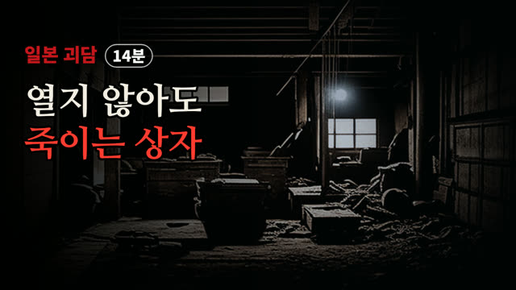
열지 않아도 사람을 죽이는 상자 | 코토리바코 [일본 괴담]

제목·설명·태그 보기
[제목] 열지 않아도 사람을 죽이는 상자 | 코토리바코 [일본 괴담] [설명] 2005년, 일본의 한 인터넷 게시판에 올라온 긴 글. 신사 집안의 창고에서 나온 작은 나무 상자를 본 순간, 아버지는 소리쳤습니다. "그거 내려놔. 지금 당장." 아이를 빼앗는 상자, 코토리바코. 백오십 년 전 차별받던 산골 마을이 원한을 담아 만들었다는 저주의 상자. 그 저주는 오직 여자와 아이에게만 향했고, 결국 만든 사람들에게도 되돌아왔습니다. 일본 인터넷에서 가장 무서운 괴담으로 손꼽히는 코토리바코 이야기. 📖 목차 0:00 시작 1:07 1부. 창고에서 나온 것 2:14 2부. 신관에게 건 전화 3:25 3부. 숨겨진 마을 4:22 4부. 아이가 태어나지 않는 겨울 5:19 5부. 바깥에서 온 남자 6:08 6부. 상자를 만드는 방법 7:18 7부. 저주가 향하는 곳 8:12 8부. 되돌아온 저주 9:07 9부. 백 년의 약속 10:06 10부. 그 후의 이야기 10:52 11부. 두 번째 상자 11:58 12부. 게시판의 반응 12:50 13부. 코토리바코가 남긴 것 13:40 14부. 열지 않아도 ※ 이 영상은 인터넷에 전해지는 괴담을 재구성한 이야기(픽션)입니다. ※ 낭독: AI 음성 · 배경음·화면: 자체 제작 #코토리바코 #일본괴담 #2ch괴담 #괴담 #무서운이야기 #공포라디오 [태그] 코토리바코, コトリバコ, 子取り箱, 일본 괴담, 2ch 괴담, 괴담, 저주, 무서운 이야기, 도시전설, 공포 라디오, 잠잘 때 듣는 괴담, 괴담 파일
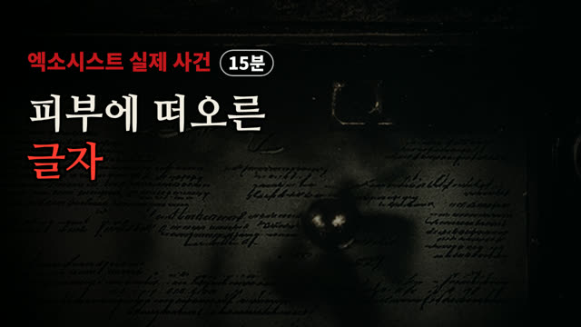
소년의 피부에 글자가 떠올랐다 | 영화 엑소시스트의 실제 사건, 롤랜드 도 구마 의식

제목·설명·태그 보기
[제목] 소년의 피부에 글자가 떠올랐다 | 영화 엑소시스트의 실제 사건, 롤랜드 도 구마 의식 [설명] 1949년 미국 메릴랜드, 위저보드로 죽은 이모를 부르던 열세 살 소년. 벽 속의 긁는 소리, 저절로 흔들리는 침대, 그리고 피부 위에 떠오른 글자. 마흔여덟 명이 지켜본 구마 의식과, 병원의 잠긴 방에서 발견된 신부의 일지. 70년 만에 밝혀진 소년의 정체까지. 영화 엑소시스트의 실제 사건을 처음부터 끝까지 따라갑니다. 📖 목차 0:00 시작 1:14 1부. 위저보드 3:09 2부. 말하는 판 4:25 3부. 목사의 집에서 5:48 4부. 피부의 글자 7:35 5부. 로마 예식서 8:50 6부. 마흔여덟 명의 증인 10:25 7부. 소설이 된 소년 12:00 8부. 저주받은 영화 12:51 9부. 소년의 이름 ※ 실제 사건을 공개된 기록과 보도를 바탕으로 정리했습니다. 초자연 현상을 믿는 쪽과 회의론 양쪽을 함께 전해 드립니다. ※ 낭독: AI 음성 · 배경음·화면: 자체 제작 #엑소시스트 #구마의식 #엑소시즘 #오컬트 #실화 #공포라디오 [태그] 엑소시스트, 엑소시스트 실화, 롤랜드 도, 구마 의식, 엑소시즘, 위저보드, 오컬트, 실화 공포, 공포 라디오, 무서운 이야기, 미제사건 파일, 괴담
매일 새벽 3시 15분에 눈이 떠지는 집 | 28일 만에 도망친 가족, 아미티빌 호러 실화

제목·설명·태그 보기
[제목] 매일 새벽 3시 15분에 눈이 떠지는 집 | 28일 만에 도망친 가족, 아미티빌 호러 실화 [설명] 1974년 11월 13일, 뉴욕 롱아일랜드 오션 애비뉴 112번지. 여섯 명의 가족이 잠든 채로 숨졌습니다. 일 년 뒤 그 집을 헐값에 산 루츠 가족은 28일 만에 모든 것을 두고 도망쳤습니다. 새벽 3시 15분, 겨울의 파리 떼, 붉은 눈. 그리고 "와인 몇 병을 마시며 지어낸 이야기"라는 변호사의 폭로. 진짜 살인과 가짜일지도 모르는 귀신 사이, 아미티빌 호러를 따라갑니다. 📖 목차 0:00 시작 1:10 1부. 오션 애비뉴 112번지 2:22 2부. 그날 새벽 4:09 3부. 목소리 5:33 4부. 이십팔 일 8:10 5부. 책이 된 집 9:14 6부. 소년의 얼굴 10:41 7부. 와인 몇 병 12:42 8부. 그 뒤에 산 사람들 13:52 9부. 남은 것 ※ 실제 사건을 공개된 기록과 보도를 바탕으로 정리했습니다. 초자연 현상을 믿는 쪽과 회의론 양쪽을 함께 전해 드립니다. ※ 낭독: AI 음성 · 배경음·화면: 자체 제작 #아미티빌 #아미티빌호러 #흉가 #오컬트 #실화 #공포라디오 [태그] 아미티빌, 아미티빌 호러, 아미티빌 실화, 흉가, 귀신 들린 집, 드페오, 오컬트, 실화 공포, 공포 라디오, 무서운 이야기, 미제사건 파일, 괴담
"절대 열지 마시오" 유리 상자에 갇힌 인형 | 컨저링 실제 주인공, 애나벨 인형의 모든 것

제목·설명·태그 보기
[제목] "절대 열지 마시오" 유리 상자에 갇힌 인형 | 컨저링 실제 주인공, 애나벨 인형의 모든 것 [설명] 1970년, 간호학과 학생이 선물 받은 웃는 얼굴의 헝겊 인형. 인형은 밤마다 자리를 옮겼고, 집 안에는 없던 종이에 "도와줘"라는 쪽지가 나타났습니다. 그리고 한 남자의 가슴에 남은 일곱 줄의 할퀸 자국. 워렌 부부의 유리 상자, 2025년 순회 행사 중 숨진 조사원의 사인까지. 영화 컨저링·애나벨의 실제 이야기를 처음부터 끝까지 따라갑니다. 📖 목차 0:00 시작 1:12 1부. 생일 선물 2:56 2부. 양피지 쪽지 4:48 3부. 일곱 줄의 상처 7:07 4부. 워렌 부부 9:05 5부. 세 단계 11:15 6부. 유리 상자 밖으로 13:52 7부. 스크린 속의 애나벨 15:11 8부. 웃고 있는 헝겊 인형 ※ 실제 사건을 공개된 기록과 보도를 바탕으로 정리했습니다. 초자연 현상을 믿는 쪽과 회의론 양쪽을 함께 전해 드립니다. ※ 낭독: AI 음성 · 배경음·화면: 자체 제작 #애나벨 #컨저링 #저주받은인형 #오컬트 #실화 #공포라디오 [태그] 애나벨, 애나벨 인형, 컨저링 실화, 저주받은 인형, 워렌 부부, 오컬트, 실화 공포, 초자연 현상, 공포 라디오, 무서운 이야기, 미제사건 파일, 괴담
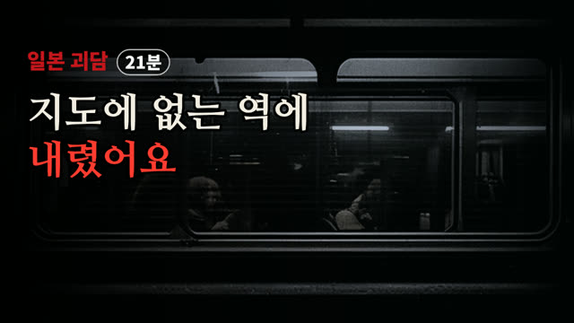
"지도에 없는 역에 내렸어요" 실시간으로 글을 올리다 사라진 여자 | 키사라기역 [일본 괴담]

제목·설명·태그 보기
[제목] "지도에 없는 역에 내렸어요" 실시간으로 글을 올리다 사라진 여자 | 키사라기역 [일본 괴담] [설명] 2004년 1월 밤, 일본의 한 게시판에 올라온 글. "아까부터 전철이 한 번도 서지 않아요." 그녀가 내린 곳은 지도에도 노선도에도 없는 '키사라기역'. 멀리서 들려오는 북소리와 방울 소리, 선로 위의 외다리 노인, 그리고 차를 태워 주겠다던 친절한 남자. "배터리가 얼마 안 남았어요. 틈을 봐서 도망치려고요." 그 글을 끝으로 그녀는 사라졌습니다. 일본 인터넷의 전설이 된 키사라기역 이야기. 📖 목차 0:00 시작 1:43 1부. 평범한 퇴근길 3:16 2부. 게시판의 사람들 4:18 3부. 키사라기 5:58 4부. 아무도 오지 않는다 7:36 5부. 북소리와 방울 소리 8:39 6부. 선로 위의 노인 9:53 7부. 이사누키 터널 11:02 8부. 친절한 남자 12:13 9부. 산 쪽으로 13:52 10부. 게시판의 추리 15:41 11부. 카미카쿠시 17:15 12부. 그 뒤의 이야기 18:52 13부. 키사라기역 행 승차권 ※ 이 영상은 인터넷에 전해지는 괴담을 재구성한 이야기(픽션)입니다. ※ 낭독: AI 음성 · 배경음·화면: 자체 제작 #키사라기역 #일본괴담 #괴담 #무서운이야기 #도시전설 #공포라디오 [태그] 키사라기역, きさらぎ駅, 일본 괴담, 괴담, 도시전설, 무서운 이야기, 2ch 괴담, 실시간 괴담, 이세계, 공포 라디오, 잠잘 때 듣는 괴담, 괴담 파일
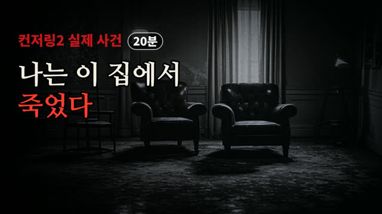
11살 소녀의 입에서 노인의 목소리가 "나는 이 집에서 죽었다" | 컨저링2 실제 사건, 엔필드 폴터가이스트

제목·설명·태그 보기
[제목] 11살 소녀의 입에서 노인의 목소리가 "나는 이 집에서 죽었다" | 컨저링2 실제 사건, 엔필드 폴터가이스트 [설명] 1977년 영국 런던 엔필드, 그린 스트리트 284번지. 서랍장이 혼자 움직이고, 벽에서 노크 소리가 울리고, 장난감이 허공을 날아다녔습니다. 출동한 경찰관은 의자가 떠올라 미끄러지는 것을 봤다는 진술서를 남겼습니다. 그리고 11살 재닛의 입에서 흘러나온 늙은 남자의 목소리. "나는 이 집에서 죽었다. 아래층, 저 구석의 의자에서." 수백 시간의 녹음과 카메라에 찍힌 장난 사이, 영화 컨저링2의 실제 사건을 처음부터 끝까지 따라갑니다. 📖 목차 0:00 시작 1:32 1부. 그린 스트리트 284번지 3:13 2부. 경찰관의 증언 4:47 3부. 날아다니는 물건들 6:10 4부. 폴터가이스트 7:41 5부. 기자와 조사관 9:09 6부. 목소리 10:58 7부. 의심 12:45 8부. 공중에 뜬 소녀 13:48 9부. 조용해진 집 15:02 10부. 잃어버린 딸 16:29 11부. 빌의 아들 17:58 12부. 진짜와 가짜 사이 ※ 실제 사건을 공개된 기록과 보도를 바탕으로 정리했습니다. 초자연 현상을 믿는 쪽과 회의론 양쪽을 함께 전해 드립니다. ※ 낭독: AI 음성 · 배경음·화면: 자체 제작 #엔필드 #폴터가이스트 #컨저링 #오컬트 #실화 #공포라디오 [태그] 엔필드 폴터가이스트, 엔필드, 폴터가이스트, 컨저링2 실화, 컨저링, 오컬트, 실화 공포, 초자연 현상, 귀신 들린 집, 공포 라디오, 무서운 이야기, 미제사건 파일
"길 쪽 창문 방은 누가 쓰나요?" 새 집에 날아든 편지 | 지금도 못 잡은 '더 왓처' [실화]

제목·설명·태그 보기
[제목] "길 쪽 창문 방은 누가 쓰나요?" 새 집에 날아든 편지 | 지금도 못 잡은 '더 왓처' [실화] [설명] 2014년 미국 뉴저지. 꿈에 그리던 집을 산 가족에게 '더 왓처(지켜보는 자)'라는 이름의 편지가 날아옵니다. 편지는 아이들의 이름과 가족의 차, 집을 고치는 인부들까지 알고 있었습니다. "아이들이 지하실에서 혼자 노는 게 무섭지 않을까요." 그 가족은 그 집에서 단 하룻밤도 자지 못했고, 편지를 쓴 사람은 지금까지도 밝혀지지 않았습니다. 넷플릭스 드라마의 실제 사건을 처음부터 끝까지 따라갑니다. 📖 목차 0:00 시작 1:36 1부. 꿈의 집 3:10 2부. 첫 번째 편지 4:57 3부. 경찰서 6:31 4부. 두 번째 편지 7:55 5부. 편지를 다시 읽다 9:35 6부. 창문 너머의 시선 11:13 7부. 세 번째 편지 12:19 8부. 이웃들 14:02 9부. 들어가지 못한 집 15:30 10부. 무너진 가족 17:12 11부. 지켜보는 자는 누구인가 18:35 12부. 우리 집 우편함 ※ 실제 사건을 공개된 보도를 바탕으로 정리했습니다. 확인되지 않은 추측은 본문에서 구분했으며, 특정 인물을 범인으로 지목하지 않습니다. ※ 낭독: AI 음성 · 배경음·화면: 자체 제작 #더왓처 #실화 #미제사건 #스토커 #무서운이야기 #공포라디오 [태그] 더 왓처, The Watcher, 실화, 미제 사건, 스토커 편지, 무서운 이야기, 넷플릭스 실화, 미국 미스터리, 공포 라디오, 잠잘 때 듣는, 실화 공포, 미제사건 파일
"재즈를 연주하는 집은 살려주겠다" 도시 전체를 협박한 살인마 | 뉴올리언스의 도끼남 [미제사건 파일]

제목·설명·태그 보기
[제목] "재즈를 연주하는 집은 살려주겠다" 도시 전체를 협박한 살인마 | 뉴올리언스의 도끼남 [미제사건 파일] [설명] 1918년 미국 뉴올리언스. 한밤중 잠긴 문의 판자를 끌로 뜯고 들어와, 잠든 가족을 그 집의 도끼로 공격한 정체불명의 살인범. 그리고 1919년 3월, 신문사에 '지옥에서' 온 편지가 도착합니다. "다음 화요일 밤 12시 15분, 재즈를 연주하지 않는 집은 도끼를 맞게 될 것이다." 그날 밤 도시 전체가 밤새 재즈를 연주했습니다. 100년 넘게 잡히지 않은 도끼남의 이야기를 처음부터 끝까지 따라갑니다. 📖 목차 0:00 시작 2:03 1부. 재즈의 도시 3:23 2부. 욕조 속의 도끼 5:49 3부. 팔 년 전의 그림자 7:51 4부. 문을 뚫는 사람 9:23 5부. 어둠 속의 키 큰 남자 10:59 6부. 엄마 품의 아이 12:59 7부. 지옥에서 온 편지 14:47 8부. 재즈가 멈추지 않은 밤 16:27 9부. 마지막 밤 17:58 10부. 그는 누구였나 20:32 11부. 편지를 쓴 사람 21:47 12부. 문 뒤의 소리 ※ 실제 사건을 공개된 기록과 보도를 바탕으로 정리했습니다. 전설과 확인되지 않은 이야기는 본문에서 구분해 전해 드립니다. 희생자분들의 명복을 빕니다. ※ 낭독: AI 음성 · 배경음·화면: 자체 제작 #미제사건 #연쇄살인 #도끼남 #미스터리 #세계미스터리 #실화 [태그] 뉴올리언스 도끼남, 도끼남, 액스맨, 미제 사건, 연쇄살인, 미스터리, 세계 미스터리, 실화 미스터리, 재즈, 범죄 미스터리, 공포 라디오, 미제사건 파일
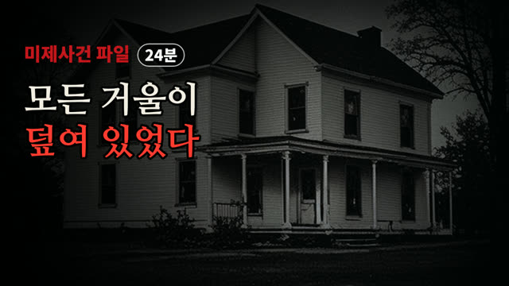
범인은 집 안의 모든 거울을 덮고 떠났다 | 8명이 잠든 채 사라진 빌리스카 도끼 살인 [미제사건 파일]

제목·설명·태그 보기
[제목] 범인은 집 안의 모든 거울을 덮고 떠났다 | 8명이 잠든 채 사라진 빌리스카 도끼 살인 [미제사건 파일] [설명] 1912년 6월, 미국 아이오와의 작은 마을 빌리스카. 교회 어린이날 행사에서 노래를 부르고 돌아온 가족과 놀러 온 두 자매, 여덟 명이 하룻밤 사이에 세상을 떠납니다. 문은 안에서 잠겨 있었고, 집 안의 모든 거울은 천으로 덮여 있었습니다. 부엌에는 손대지 않은 음식과 피 섞인 물, 도끼 옆에는 베이컨 덩어리. 자백까지 했던 떠돌이 목사, 원한을 품은 상원의원, 그리고 기차를 타고 떠돌았을지도 모르는 남자. 100년 넘게 풀리지 않은 빌리스카 사건을 따라갑니다. 📖 목차 0:00 시작 2:14 1부. 평화로운 마을 3:39 2부. 어린이날 행사 5:38 3부. 조용한 아침 7:10 4부. 여덟 개의 침대 8:46 5부. 현장의 이상한 것들 11:55 6부. 무너진 현장 13:00 7부. 용의자들 15:31 8부. 기차 안의 목사 17:25 9부. 같은 방식의 밤들 19:16 10부. 기차를 타고 온 남자 20:51 11부. 그 집은 지금도 22:24 12부. 노래를 부르던 밤 ※ 실제 사건을 공개된 기록과 보도를 바탕으로 정리했습니다. 소문과 추측은 본문에서 구분해 전해 드립니다. 희생자분들의 명복을 빕니다. ※ 낭독: AI 음성 · 배경음·화면: 자체 제작 #미제사건 #빌리스카 #미스터리 #세계미스터리 #실화 #공포라디오 [태그] 빌리스카, 빌리스카 도끼 살인, 미제 사건, 미스터리, 세계 미스터리, 실화 미스터리, 미국 미제사건, 도끼 살인, 범죄 미스터리, 공포 라디오, 무서운 이야기, 미제사건 파일
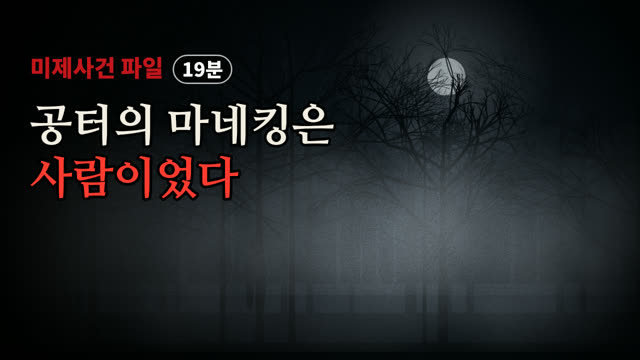
"내가 죽였다고 해도 증명 못 해" 경찰 도청기에 녹음된 목소리 | 블랙 달리아 사건 [미제사건 파일]

제목·설명·태그 보기
[제목] "내가 죽였다고 해도 증명 못 해" 경찰 도청기에 녹음된 목소리 | 블랙 달리아 사건 [미제사건 파일] [설명] 1947년 1월 로스앤젤레스. 산책하던 엄마가 공터에서 발견한 '마네킹'은, 스물두 살 엘리자베스 쇼트였습니다. 열흘 뒤 신문사로 배달된, 신문 글자를 오려 붙인 봉투. 그 안에는 그녀의 출생증명서와 주소록이 들어 있었습니다. 쉰 명이 넘는 가짜 자백, 경찰의 불법 감금, 그리고 몇 년 뒤 검찰의 비밀 도청기에 녹음된 한 유명 의사의 목소리. 아들이 아버지를 범인으로 고발한 할리우드 최악의 미제 사건을 처음부터 끝까지 따라갑니다. 📖 목차 0:00 시작 1:52 1부. 할리우드를 꿈꾼 소녀 3:52 2부. 일월 구일, 빌트모어 호텔 4:56 3부. 공터의 마네킹 6:42 4부. 신문들의 광기 8:38 5부. 오린 글자의 소포 10:05 6부. 쉰 명의 범인 11:19 7부. 불법 감금 12:35 8부. 도청기 속의 목소리 15:05 9부. 다른 얼굴들 16:10 10부. 사라진 엿새 17:24 11부. 엘리자베스 ※ 실제 사건을 공개된 기록과 보도를 바탕으로 정리했습니다. 주장과 반론은 본문에서 구분해 전해 드립니다. 희생자의 명복을 빕니다. ※ 낭독: AI 음성 · 배경음·화면: 자체 제작 #블랙달리아 #미제사건 #미스터리 #실화 #세계미스터리 #범죄 [태그] 블랙 달리아, 블랙달리아, 엘리자베스 쇼트, 미제 사건, 미스터리, 세계 미스터리, 실화 미스터리, 할리우드 미제사건, 조지 호델, 범죄 미스터리, 공포 라디오, 미제사건 파일
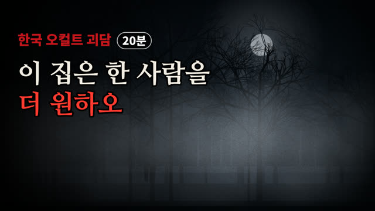
굿을 하던 무당이 방울을 던지고 도망쳤다 "이 집은 한 사람을 더 원하오" | 살 맞은 집 [괴담 파일]

제목·설명·태그 보기
[제목] 굿을 하던 무당이 방울을 던지고 도망쳤다 "이 집은 한 사람을 더 원하오" | 살 맞은 집 [괴담 파일] [설명] 사람들이 집을 짓지 않던 골짜기, 곡소리골. 당산나무를 베어 내고 새집을 지은 가족에게 이상한 일들이 시작됩니다. 마루 밑에서 밤마다 들리는 긁는 소리, 마당에 손님이 줄 서 있다는 할머니, 그리고 굿판에서 방울을 내던진 무당의 마지막 경고. "해가 지면 누가 이름을 세 번 부르거든, 절대 따라가지 마시오." 무속인들 사이에서 전해지는 한국 오컬트 괴담을 30분 동안 들려드립니다. 📖 목차 0:00 시작 1:32 1부. 곡소리골 2:51 2부. 당산나무 4:12 3부. 새집의 손님들 6:03 4부. 마을 노인의 이야기 8:10 5부. 벽을 보고 웃는 사람 9:36 6부. 청송 보살의 굿 12:10 7부. 사흘째 밤 13:52 8부. 창고 안에서 15:32 9부. 딸의 기억 16:39 10부. 마루 밑 18:29 11부. 세 번째 이름 ※ 이 영상은 무속인들 사이에 전해지는 이야기를 재구성한 창작 괴담(픽션)입니다. 실제 인물·장소·사건과 관계없습니다. ※ 낭독: AI 음성 · 배경음·화면: 자체 제작 #한국괴담 #무당괴담 #괴담 #무서운이야기 #오컬트 #공포라디오 [태그] 한국 괴담, 무당 괴담, 굿, 오컬트, 괴담, 무서운 이야기, 실화 괴담, 흉가, 공포 라디오, 괴담 낭독, 잠잘 때 듣는 괴담, 괴담 파일
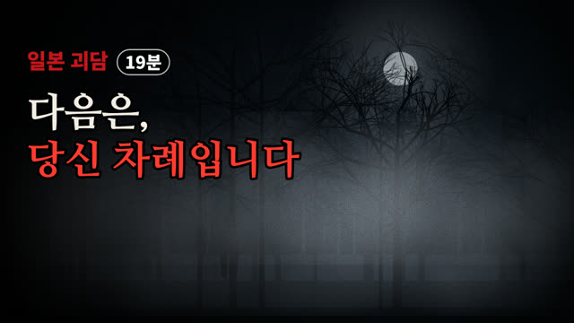
"다음은, 산 채로 회 뜨기입니다" 꿈속 기차의 안내 방송 | 일본 괴담 '원숭이 꿈' [괴담 파일]

제목·설명·태그 보기
[제목] "다음은, 산 채로 회 뜨기입니다" 꿈속 기차의 안내 방송 | 일본 괴담 '원숭이 꿈' [괴담 파일] [설명] 아무도 없는 시골 역, 지지직거리는 안내 방송, 그리고 놀이공원 같은 꼬마 기차. 안내 방송이 끝날 때마다 뒷자리 승객이 한 명씩 사라집니다. 맨 뒤에서부터, 차례대로. 겨우 꿈에서 깨어난 그녀에게 들린 마지막 목소리. "도망치는 겁니까. 다음에 오시면, 마지막입니다." 그리고 4년 뒤, 그녀는 다시 그 역에 서 있었습니다. 한 번 들으면 같은 꿈을 꾼다는 일본 괴담 '원숭이 꿈(사루유메)'. 📖 목차 0:00 시작 1:40 1부. 자각몽 2:25 2부. 버려진 역 4:33 3부. 첫 번째 안내 방송 6:17 4부. 두 번째 안내 방송 7:32 5부. 깨어나야 한다 9:30 6부. 사 년 뒤 10:58 7부. 마지막 역 12:34 8부. 꿈은 옮는다 13:45 9부. 또 다른 승객 15:30 10부. 꿈속에서 죽으면 16:44 11부. 기차에서 내리는 방법 17:47 12부. 오늘 밤의 승강장 ※ 이 영상은 인터넷에 전해지는 괴담을 재구성한 이야기(픽션)입니다. ※ 낭독: AI 음성 · 배경음·화면: 자체 제작 #원숭이꿈 #일본괴담 #괴담 #무서운이야기 #꿈괴담 #공포라디오 [태그] 원숭이 꿈, 사루유메, 일본 괴담, 괴담, 무서운 이야기, 꿈 괴담, 2ch 괴담, 일본 도시전설, 공포 라디오, 괴담 낭독, 잠잘 때 듣는 괴담, 괴담 파일
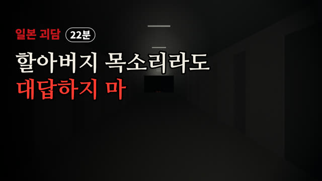
할아버지 목소리로 문을 열라고 했다 | 일본 최악의 괴담 '팔척귀신' 포포포 [괴담 파일]

제목·설명·태그 보기
[제목] 할아버지 목소리로 문을 열라고 했다 | 일본 최악의 괴담 '팔척귀신' 포포포 [괴담 파일] [설명] 담장 너머로 2미터가 넘는 곳에서 움직이는 하얀 모자. 그리고 남자 목소리로 들려오는 '포포포포'. 그날 밤 소년은 부적과 소금으로 봉인된 방에 갇힙니다. "아침 일곱 시 전에 들리는 목소리는 전부 그것이다. 할아버지 목소리라도." 일본 인터넷 게시판에서 시작돼 일본을 대표하는 현대 괴담이 된 팔척귀신(핫샤쿠사마) 이야기를 처음부터 끝까지 들려드립니다. 📖 목차 0:00 시작 1:46 1부. 시골의 여름 3:07 2부. 담장 위의 모자 5:08 3부. 할아버지의 얼굴 6:45 4부. 팔척님 8:58 5부. 봉인된 방 10:46 6부. 새벽 한 시 13:15 7부. 검게 변한 소금 14:22 8부. 아홉 대의 차 16:50 9부. 부서진 돌부처 17:58 10부. 나도 봤다 19:22 11부. 그것은 무엇이었을까 20:49 12부. 문을 열지 마세요 ※ 이 영상은 인터넷에 전해지는 괴담을 재구성한 이야기(픽션)입니다. ※ 낭독: AI 음성 · 배경음·화면: 자체 제작 #팔척귀신 #일본괴담 #괴담 #무서운이야기 #핫샤쿠사마 #공포라디오 [태그] 팔척귀신, 핫샤쿠사마, 일본 괴담, 괴담, 무서운 이야기, 2ch 괴담, 일본 도시전설, 공포 라디오, 괴담 낭독, 잠잘 때 듣는 괴담, 실화 괴담, 괴담 파일
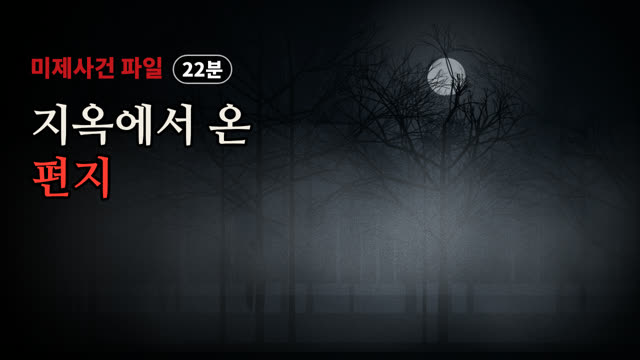
편지에는 '지옥에서'라고 적혀 있었다 | 130년째 정체불명, 잭 더 리퍼 [미제사건 파일]

제목·설명·태그 보기
[제목] 편지에는 '지옥에서'라고 적혀 있었다 | 130년째 정체불명, 잭 더 리퍼 [미제사건 파일] [설명] 1888년 런던 화이트채플. 안개 낀 골목에서 다섯 명의 여성이 차례로 목숨을 잃습니다. 붉은 잉크로 쓴 '친애하는 보스에게' 편지, 사람의 신장과 함께 배달된 '지옥에서' 편지, 그리고 날이 밝기 전에 지워진 벽의 글씨. 세상에서 가장 유명한 살인범의 이름 뒤에 숨은 사람은 누구였을까요. 범인을 본 목격자들과 주요 용의자, 그리고 잊혀진 피해자들의 이야기까지 처음부터 끝까지 따라갑니다. 📖 목차 0:00 시작 1:43 1부. 화이트채플 2:59 2부. 벅스 로우의 새벽 4:38 3부. 두 번째 새벽 6:31 4부. 친애하는 보스에게 7:41 5부. 하룻밤, 두 명 10:29 6부. 가죽 앞치마 11:40 7부. 그를 본 사람들 13:52 8부. 지옥에서 15:20 9부. 밀러스 코트 십삼호 17:12 10부. 용의자들 19:33 11부. 이름 없는 사람, 이름을 가진 사람들 21:02 12부. 안개는 아직 걷히지 않았다 ※ 실제 사건을 공개된 기록과 연구를 바탕으로 정리했습니다. 추측과 소문은 본문에서 구분해 전해 드립니다. 희생자분들의 명복을 빕니다. ※ 낭독: AI 음성 · 배경음·화면: 자체 제작 #잭더리퍼 #미제사건 #연쇄살인 #미스터리 #세계미스터리 #실화 [태그] 잭 더 리퍼, 잭더리퍼, 미제 사건, 연쇄살인, 미스터리, 세계 미스터리, 실화 미스터리, 런던, 화이트채플, 범죄 미스터리, 공포 라디오, 미제사건 파일
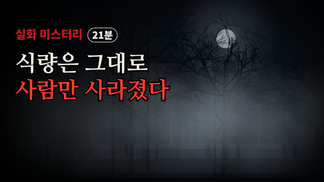
식량은 6개월 치, 사람은 0명 | 대서양의 유령선 메리 셀레스트호의 진실 [미스터리]

제목·설명·태그 보기
[제목] 식량은 6개월 치, 사람은 0명 | 대서양의 유령선 메리 셀레스트호의 진실 [미스터리] [설명] 1872년 12월, 대서양 한가운데서 발견된 배 한 척. 배는 멀쩡했고, 여섯 달 치 식량과 선원들의 짐, 선장 부인의 재봉틀과 아이의 장난감까지 그대로였습니다. 그런데 선장 가족과 선원, 열 명이 모두 사라졌습니다. 그리고 다시는 발견되지 않았습니다. 바다에서 일어난 가장 유명한 미스터리, 메리 셀레스트호 이야기를 처음부터 끝까지 따라갑니다. 📖 목차 0:00 시작 1:16 1부. 불운한 배 2:25 2부. 선장의 가족 4:14 3부. 십이월 사일, 대서양 6:25 4부. 텅 빈 갑판 9:32 5부. 지브롤터의 재판 11:36 6부. 이야기가 된 유령선 13:13 7부. 무엇이 그들을 떠나게 했나 17:43 8부. 배의 마지막 18:45 9부. 돌아오지 않은 열 명 ※ 실제 사건을 공개된 기록과 연구를 바탕으로 정리했습니다. 소문과 소설에서 비롯된 이야기는 본문에서 구분해 전해 드립니다. ※ 낭독: AI 음성 · 배경음·화면: 자체 제작 #미스터리 #메리셀레스트 #유령선 #세계미스터리 #미제사건 #공포라디오 [태그] 메리 셀레스트, 메리 셀레스트호, 유령선, 미스터리, 세계 미스터리, 바다 미스터리, 미제 사건, 실화 미스터리, 대서양, 공포 라디오, 잠잘 때 듣는, 미스터리 다큐
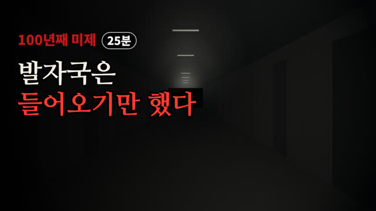
눈 위의 발자국은 들어오기만 했다 | 100년째 미제, 힌터카이펙 일가 사건 [미스터리]

제목·설명·태그 보기
[제목] 눈 위의 발자국은 들어오기만 했다 | 100년째 미제, 힌터카이펙 일가 사건 [미스터리] [설명] 1922년 독일 바이에른, 숲 끝의 외딴 농가. 눈 위에는 숲에서 집으로 들어온 발자국만 있고, 나간 발자국은 없었습니다. 다락에서는 밤마다 발소리가 들렸고, 아무도 구독하지 않은 신문이 집 안에서 발견됐습니다. 그리고 며칠 뒤, 그 집의 여섯 명이 하룻밤 사이에 모두 세상을 떠납니다. 그런데 그 뒤에도 굴뚝에서는 연기가 피어올랐습니다. 100년이 넘도록 풀리지 않은 힌터카이펙 사건을 처음부터 끝까지 따라갑니다. 📖 목차 0:00 시작 1:32 1부. 숲 끝의 외딴 농가 3:44 2부. 그만둔 하녀 4:58 3부. 한 방향의 발자국 7:51 4부. 첫 출근한 하녀 8:58 5부. 아무도 나오지 않은 나흘 10:33 6부. 헛간의 문 12:38 7부. 그날 밤, 헛간에서 14:23 8부. 그는 그 집에 살았다 16:38 9부. 용의자들 19:26 10부. 벽 속의 곡괭이 20:22 11부. 풀리지 않는 질문들 22:14 12부. 백 년 뒤에도 23:39 13부. 머리 위의 발소리 ※ 실제 사건을 공개된 기록과 보도를 바탕으로 정리했습니다. 수사관의 추정과 소문은 본문에서 구분해 전해 드립니다. 희생자분들의 명복을 빕니다. ※ 낭독: AI 음성 · 배경음·화면: 자체 제작 #미스터리 #힌터카이펙 #미제사건 #세계미스터리 #실화 #공포라디오 [태그] 힌터카이펙, 힌터카이펙 사건, 미제 사건, 미스터리, 세계 미스터리, 실화 미스터리, 독일 미제사건, 다락방, 공포 라디오, 무서운 이야기, 잠잘 때 듣는, 미스터리 다큐
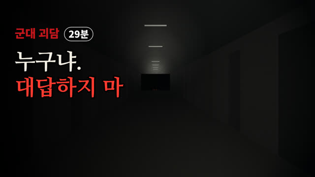
지도에서 지워진 13초소, 그것은 20년 전 암구호로 수하했다 | 군대 괴담 [심야 괴담]

제목·설명·태그 보기
[제목] 지도에서 지워진 13초소, 그것은 20년 전 암구호로 수하했다 | 군대 괴담 [심야 괴담] [설명] 강원도 최전방 GOP. 소대가 맡은 초소는 열두 개인데, 지도에는 볼펜으로 지운 자리가 하나 더 있습니다. 새벽 두 시에서 네 시 사이, 능선 쪽에서 군화 소리가 내려오면 절대 먼저 수하하지 말 것. 그리고 저쪽에서 먼저 '누구냐'고 묻는다면, 절대로 대답하지 말 것. 30분 동안 한 사람의 이야기로 끝까지 들려드립니다. 📖 목차 0:00 시작 1:13 1부. 철책 3:16 2부. 세 가지 규칙 5:23 3부. 십이 초소 9:18 4부. 폐쇄된 초소 11:55 5부. 김 병장의 마지막 밤 14:57 6부. 근무 일지 17:54 7부. 혼자 서는 밤 22:31 8부. 교대 24:35 9부. 전역하던 날 26:56 10부. 다시, 누구냐 ※ 이 이야기는 창작한 괴담(픽션)입니다. 실제 부대·인물과 관계없습니다. ※ 낭독: AI 음성 · 배경음·화면: 자체 제작 #군대괴담 #괴담 #무서운이야기 #심야괴담 #GOP #공포라디오 [태그] 군대 괴담, GOP 괴담, 괴담, 무서운 이야기, 심야 괴담, 공포 라디오, 실화 괴담, 군대 무서운 이야기, 초소 괴담, 암구호, 잠잘 때 듣는 괴담, 괴담 낭독
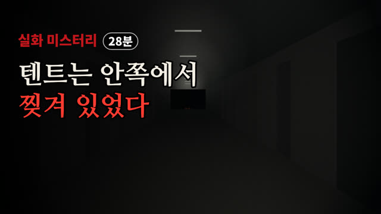
텐트는 안쪽에서 찢겨 있었다 | 디아틀로프 고개 사건, 아홉 명의 마지막 밤 [미스터리]

제목·설명·태그 보기
[제목] 텐트는 안쪽에서 찢겨 있었다 | 디아틀로프 고개 사건, 아홉 명의 마지막 밤 [미스터리] [설명] 1959년 2월, 러시아 우랄 산맥 '죽은 산'의 비탈. 수색대가 발견한 텐트는 안쪽에서 찢겨 있었고, 아홉 명의 대학생은 신발도 외투도 없이 영하의 눈밭으로 사라졌습니다. 몸 안의 뼈만 부서진 시신, 사라진 눈과 혀, 옷에서 나온 방사능. 60년 넘게 풀리지 않은 디아틀로프 고개 사건을 처음부터 끝까지, 하나의 이야기로 따라갑니다. 📖 목차 0:00 시작 1:27 1부. 아홉 명의 대학생 3:47 2부. 돌아간 한 사람 6:38 3부. 이월 일일, 마지막 밤 8:24 4부. 산비탈의 텐트 11:19 5부. 삼나무 아래 13:51 6부. 오월의 골짜기 17:33 7부. 무엇이 그들을 쫓아냈나 21:01 8부. 육십 년 뒤의 대답 25:14 9부. 죽은 산에 남은 것 ※ 실제 사건을 공개된 기록과 보도를 바탕으로 정리했습니다. 추측과 소문은 본문에서 구분해 전해 드립니다. ※ 낭독: AI 음성 · 배경음·화면: 자체 제작 #미스터리 #디아틀로프 #미제사건 #세계미스터리 #괴담 #공포라디오 [태그] 디아틀로프, 디아틀로프 고개, 디아틀로프 고개 사건, 미스터리, 세계 미스터리, 미제 사건, 실화 미스터리, 러시아 미스터리, 죽은 산, 괴담, 공포 라디오, 잠잘 때 듣는, 미스터리 다큐
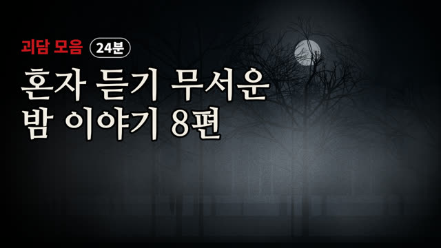
혼자 듣기 무서운 밤 이야기 8편

제목·설명·태그 보기
[제목] 무서운 이야기 8편 모음 | 심야 버스·새벽 택시·야간 편의점 괴담 | 잠잘 때 듣는 공포 라디오 24분 [설명] 혼자 듣기 무서운 밤 이야기 8편 — 잠 못 드는 밤, 불 끄고 듣는 괴담 8편 (24분) 익명 게시판 괴담 형식의 창작 이야기를, 낮고 잔잔한 목소리로 한 편씩 천천히 읽어 드립니다. 각 이야기 끝에는 작성자의 추가 글(후기)도 함께 읽어 드려요. 이어폰 끼고, 불 끄고 들어 보세요. 📖 이야기 목록 0:00 인트로 0:40 제1화 심야 버스 — 막차의 마지막 정류장 3:33 제2화 새벽 택시 — 뒷좌석의 손님 6:30 제3화 야간 편의점 — 계산대 너머의 손님 10:00 제4화 계곡 캠핑장 — 텐트 밖의 발소리 12:41 제5화 시골 마을 — 할머니의 마지막 규칙 15:35 제6화 밤의 학교 — 네 번째 계단 18:15 제7화 산길 터널 — 구 터널의 라디오 21:01 제8화 낡은 여관 — 이백삼 호의 손님 🔔 매주 새 괴담 모음이 올라옵니다. 구독하고 함께 들어요. 💬 가장 무서웠던 이야기를 댓글로 알려 주세요. ※ 이 영상의 이야기는 모두 창작한 픽션입니다. 실제 인물·장소·사건과 관계없습니다. ※ 낭독: AI 음성(Supertonic) — 이 영상의 목소리는 AI가 생성했습니다 · 화면·효과음: 자체 제작 #괴담 #괴담모음 #무서운이야기 #괴담낭독 #수면괴담 #공포라디오 [태그] 괴담, 괴담 모음, 무서운 이야기, 괴담 낭독, 공포 라디오, 수면 괴담, 잠잘 때 듣는 괴담, 2ch 괴담, 실화 괴담, 미스터리, 심야 버스, 새벽 택시, 야간 편의점, 계곡 캠핑장, 시골 마을, 밤의 학교, 산길 터널, 낡은 여관
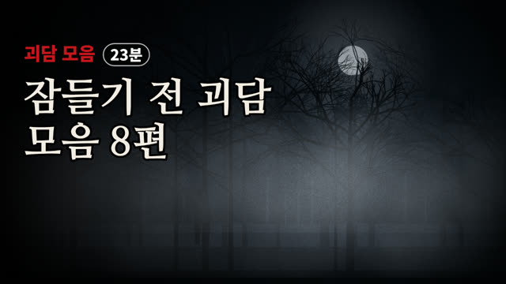
잠들기 전 괴담 모음 8편

제목·설명·태그 보기
[제목] [괴담 모음] 잠들기 전 괴담 모음 8편 | 산길 터널·지하철·산장 대피소 | 잠들기 전 듣는 잔잔한 낭독 23분 [설명] 잠들기 전 괴담 모음 8편 — 잠 못 드는 밤, 불 끄고 듣는 괴담 8편 (23분) 익명 게시판 괴담 형식의 창작 이야기를, 낮고 잔잔한 목소리로 한 편씩 천천히 읽어 드립니다. 각 이야기 끝에는 작성자의 추가 글(후기)도 함께 읽어 드려요. 이어폰 끼고, 불 끄고 들어 보세요. 📖 이야기 목록 0:00 인트로 0:23 제1화 산길 터널 — 돌아오지 않는 터널 3:05 제2화 지하철 — 없는 역의 안내 방송 6:03 제3화 산장 대피소 — 눈 오는 밤의 노크 9:03 제4화 중고 거래 — 거울 속의 문 11:53 제5화 고시원 — 고시원 총무의 당부 14:50 제6화 낡은 여관 — 여관 주인의 부탁 17:33 제7화 폐병원 — 닫힌 병동의 간호사 20:17 제8화 오래된 아파트 — 이사 온 첫 주 🔔 매주 새 괴담 모음이 올라옵니다. 구독하고 함께 들어요. 💬 가장 무서웠던 이야기를 댓글로 알려 주세요. ※ 이 영상의 이야기는 모두 창작한 픽션입니다. 실제 인물·장소·사건과 관계없습니다. ※ 낭독: AI 음성(Supertonic) — 이 영상의 목소리는 AI가 생성했습니다 · 화면·효과음: 자체 제작 #괴담 #괴담모음 #무서운이야기 #괴담낭독 #수면괴담 #공포라디오 [태그] 괴담, 괴담 모음, 무서운 이야기, 괴담 낭독, 공포 라디오, 수면 괴담, 잠잘 때 듣는 괴담, 2ch 괴담, 실화 괴담, 미스터리, 산길 터널, 지하철, 산장 대피소, 중고 거래, 고시원, 낡은 여관, 폐병원, 오래된 아파트
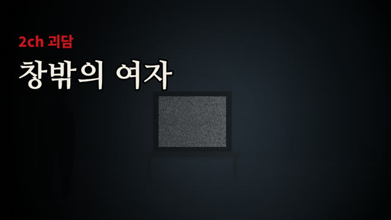
야간 경비 일지

제목·설명·태그 보기
[제목] [2ch 괴담] 야간 경비 일지 | 잠들기 전 듣는 잔잔한 괴담 낭독 [설명] 야간 경비 일지 일본 익명 게시판 2ch 괴담 형식으로 만든 창작 이야기를 잔잔하게 읽어 드립니다. 불 끄고, 이어폰 끼고 들어 보세요. 0:00 시작 1:15 이야기 1 ※ 이 이야기는 2ch 괴담 형식으로 창작한 픽션입니다. 실제 인물·장소와 관계없습니다. ※ 낭독: AI 음성(Supertonic) — 이 영상의 목소리는 AI가 생성했습니다 · 화면·효과음: 자체 제작 #괴담 #2ch괴담 #무서운이야기 #괴담낭독 #공포 #수면괴담 [태그] 괴담, 2ch 괴담, 일본 괴담, 무서운 이야기, 공포 낭독, 괴담 낭독, 수면 괴담, 미스터리, 오컬트, 야간 경비 일지
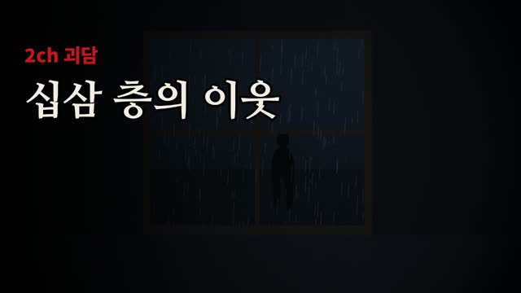
돌아오지 않는 터널

제목·설명·태그 보기
[제목] [2ch 괴담] 돌아오지 않는 터널 | 잠들기 전 듣는 잔잔한 괴담 낭독 [설명] 돌아오지 않는 터널 일본 익명 게시판 2ch 괴담 형식으로 만든 창작 이야기를 잔잔하게 읽어 드립니다. 불 끄고, 이어폰 끼고 들어 보세요. 0:00 시작 1:14 이야기 1 ※ 이 이야기는 2ch 괴담 형식으로 창작한 픽션입니다. 실제 인물·장소와 관계없습니다. ※ 낭독: AI 음성(Supertonic) — 이 영상의 목소리는 AI가 생성했습니다 · 화면·효과음: 자체 제작 #괴담 #2ch괴담 #무서운이야기 #괴담낭독 #공포 #수면괴담 [태그] 괴담, 2ch 괴담, 일본 괴담, 무서운 이야기, 공포 낭독, 괴담 낭독, 수면 괴담, 미스터리, 오컬트, 돌아오지 않는 터널
야간 편의점의 마지막 손님

제목·설명·태그 보기
[제목] [2ch 괴담] 야간 편의점의 마지막 손님 | 잠들기 전 듣는 잔잔한 괴담 낭독 [설명] 야간 편의점의 마지막 손님 일본 익명 게시판 2ch 괴담 형식으로 만든 창작 이야기를 잔잔하게 읽어 드립니다. 불 끄고, 이어폰 끼고 들어 보세요. 0:00 시작 1:22 이야기 1 ※ 이 이야기는 2ch 괴담 형식으로 창작한 픽션입니다. 실제 인물·장소와 관계없습니다. ※ 낭독: AI 음성(Supertonic) — 이 영상의 목소리는 AI가 생성했습니다 · 화면·효과음: 자체 제작 #괴담 #2ch괴담 #무서운이야기 #괴담낭독 #공포 #수면괴담 [태그] 괴담, 2ch 괴담, 일본 괴담, 무서운 이야기, 공포 낭독, 괴담 낭독, 수면 괴담, 미스터리, 오컬트, 야간 편의점의 마지막 손님
창밖의 여자

제목·설명·태그 보기
[제목] [2ch 괴담] 창밖의 여자 | 잠들기 전 듣는 잔잔한 괴담 낭독 [설명] 창밖의 여자 일본 익명 게시판 2ch 괴담 형식으로 만든 창작 이야기를 잔잔하게 읽어 드립니다. 불 끄고, 이어폰 끼고 들어 보세요. 0:00 시작 1:02 이야기 1 ※ 이 이야기는 2ch 괴담 형식으로 창작한 픽션입니다. 실제 인물·장소와 관계없습니다. ※ 낭독: AI 음성(Supertonic) — 이 영상의 목소리는 AI가 생성했습니다 · 화면·효과음: 자체 제작 #괴담 #2ch괴담 #무서운이야기 #괴담낭독 #공포 #수면괴담 [태그] 괴담, 2ch 괴담, 일본 괴담, 무서운 이야기, 공포 낭독, 괴담 낭독, 수면 괴담, 미스터리, 오컬트, 창밖의 여자
여관 주인의 부탁

제목·설명·태그 보기
[제목] [2ch 괴담] 여관 주인의 부탁 | 잠들기 전 듣는 잔잔한 괴담 낭독 [설명] 여관 주인의 부탁 일본 익명 게시판 2ch 괴담 형식으로 만든 창작 이야기를 잔잔하게 읽어 드립니다. 불 끄고, 이어폰 끼고 들어 보세요. 0:00 시작 1:06 이야기 1 ※ 이 이야기는 2ch 괴담 형식으로 창작한 픽션입니다. 실제 인물·장소와 관계없습니다. ※ 낭독: AI 음성(Supertonic) — 이 영상의 목소리는 AI가 생성했습니다 · 화면·효과음: 자체 제작 #괴담 #2ch괴담 #무서운이야기 #괴담낭독 #공포 #수면괴담 [태그] 괴담, 2ch 괴담, 일본 괴담, 무서운 이야기, 공포 낭독, 괴담 낭독, 수면 괴담, 미스터리, 오컬트, 여관 주인의 부탁
뒷산의 종소리

제목·설명·태그 보기
[제목] [2ch 괴담] 뒷산의 종소리 | 잠들기 전 듣는 잔잔한 괴담 낭독 [설명] 뒷산의 종소리 일본 익명 게시판 2ch 괴담 형식으로 만든 창작 이야기를 잔잔하게 읽어 드립니다. 불 끄고, 이어폰 끼고 들어 보세요. 0:00 시작 1:09 이야기 1 ※ 이 이야기는 2ch 괴담 형식으로 창작한 픽션입니다. 실제 인물·장소와 관계없습니다. ※ 낭독: AI 음성(Supertonic) — 이 영상의 목소리는 AI가 생성했습니다 · 화면·효과음: 자체 제작 #괴담 #2ch괴담 #무서운이야기 #괴담낭독 #공포 #수면괴담 [태그] 괴담, 2ch 괴담, 일본 괴담, 무서운 이야기, 공포 낭독, 괴담 낭독, 수면 괴담, 미스터리, 오컬트, 뒷산의 종소리
할머니의 마지막 규칙

제목·설명·태그 보기
[제목] [2ch 괴담] 할머니의 마지막 규칙 | 잠들기 전 듣는 잔잔한 괴담 낭독 [설명] 할머니의 마지막 규칙 일본 익명 게시판 2ch 괴담 형식으로 만든 창작 이야기를 잔잔하게 읽어 드립니다. 불 끄고, 이어폰 끼고 들어 보세요. 0:00 시작 1:09 이야기 1 ※ 이 이야기는 2ch 괴담 형식으로 창작한 픽션입니다. 실제 인물·장소와 관계없습니다. ※ 낭독: AI 음성(Supertonic) — 이 영상의 목소리는 AI가 생성했습니다 · 화면·효과음: 자체 제작 #괴담 #2ch괴담 #무서운이야기 #괴담낭독 #공포 #수면괴담 [태그] 괴담, 2ch 괴담, 일본 괴담, 무서운 이야기, 공포 낭독, 괴담 낭독, 수면 괴담, 미스터리, 오컬트, 할머니의 마지막 규칙
십삼 층의 이웃

제목·설명·태그 보기
[제목] [2ch 괴담] 십삼 층의 이웃 | 잠들기 전 듣는 잔잔한 괴담 낭독 [설명] 십삼 층의 이웃 일본 익명 게시판 2ch 괴담 형식으로 만든 창작 이야기를 잔잔하게 읽어 드립니다. 불 끄고, 이어폰 끼고 들어 보세요. 0:00 시작 1:00 이야기 1 ※ 이 이야기는 2ch 괴담 형식으로 창작한 픽션입니다. 실제 인물·장소와 관계없습니다. ※ 낭독: AI 음성(Supertonic) — 이 영상의 목소리는 AI가 생성했습니다 · 화면·효과음: 자체 제작 #괴담 #2ch괴담 #무서운이야기 #괴담낭독 #공포 #수면괴담 [태그] 괴담, 2ch 괴담, 일본 괴담, 무서운 이야기, 공포 낭독, 괴담 낭독, 수면 괴담, 미스터리, 오컬트, 십삼 층의 이웃
야간 경비 일지

제목·설명·태그 보기
[제목] [2ch 괴담] 야간 경비 일지 | 잠들기 전 듣는 잔잔한 괴담 낭독 [설명] 야간 경비 일지 일본 익명 게시판 2ch 괴담 형식으로 만든 창작 이야기를 잔잔하게 읽어 드립니다. 불 끄고, 이어폰 끼고 들어 보세요. 0:00 시작 1:00 이야기 1 ※ 이 이야기는 2ch 괴담 형식으로 창작한 픽션입니다. 실제 인물·장소와 관계없습니다. ※ 낭독: AI 음성(Supertonic) — 이 영상의 목소리는 AI가 생성했습니다 · 화면·효과음: 자체 제작 #괴담 #2ch괴담 #무서운이야기 #괴담낭독 #공포 #수면괴담 [태그] 괴담, 2ch 괴담, 일본 괴담, 무서운 이야기, 공포 낭독, 괴담 낭독, 수면 괴담, 미스터리, 오컬트, 야간 경비 일지
이야기마다 가장 무서운 도입부를 세로로 다시 만든 숏츠입니다. ⬇ 숏츠 받기 → 사진 앱에 저장 → YouTube 앱 [＋] → 쇼츠 → 영상 고르기 → 제목·설명·태그 버튼으로 복사해서 붙여 넣기
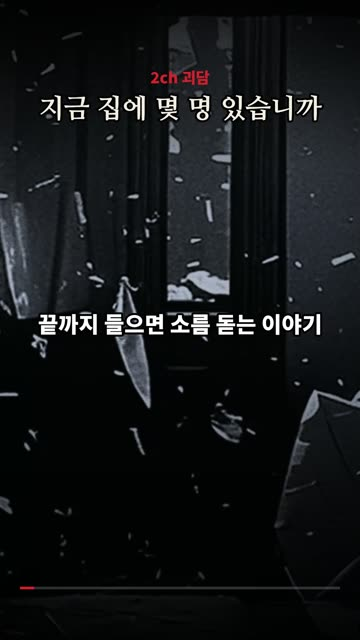
지금 집에 몇 명 있습니까 | 2ch 실시간 괴담 #shorts
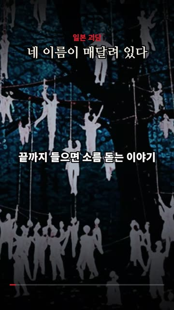
네 이름이 매달려 있다 | 이름을 가져가는 마을 #shorts
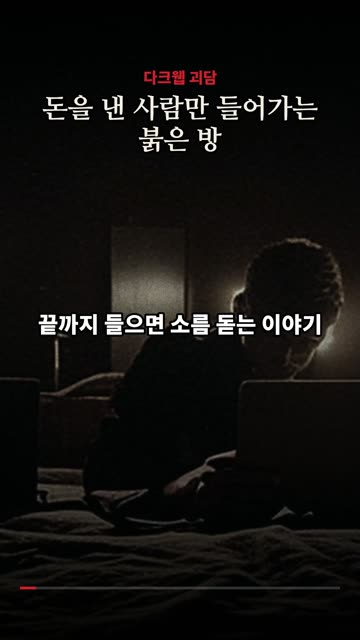
돈을 낸 사람만 들어가는 붉은 방 | 딥웹 레드룸의 진실 #shorts
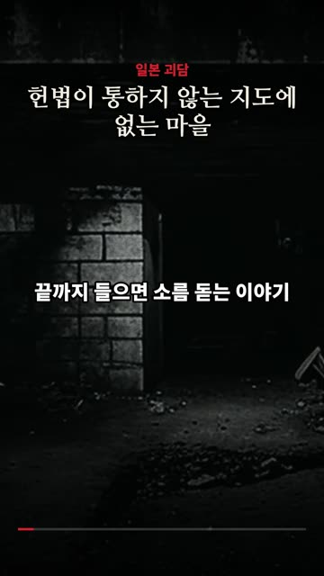
헌법이 통하지 않는 지도에 없는 마을 | 이누나키 마을 #shorts
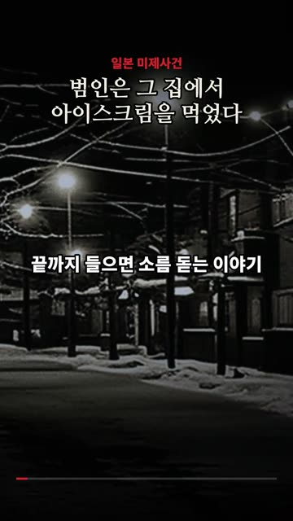
범인은 그 집에서 아이스크림을 먹었다 | 세타가야 일가 살인사건 #shorts
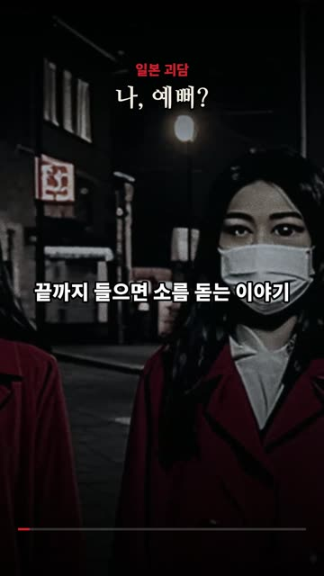
나, 예뻐? | 입 찢어진 여자 #shorts
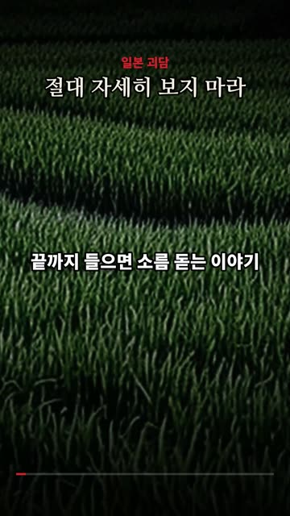
절대 자세히 보지 마라 | 쿠네쿠네 #shorts
열지 않아도 죽이는 상자 | 코토리바코 #shorts
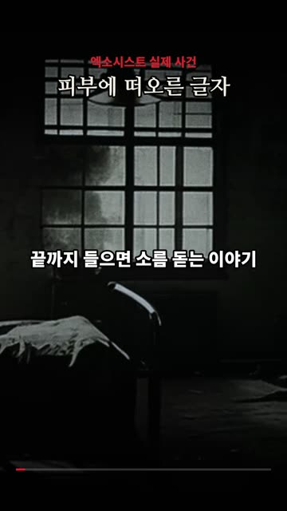
피부에 떠오른 글자 | 영화 엑소시스트의 실제 사건, 롤랜드 도 구마 의식 #shorts
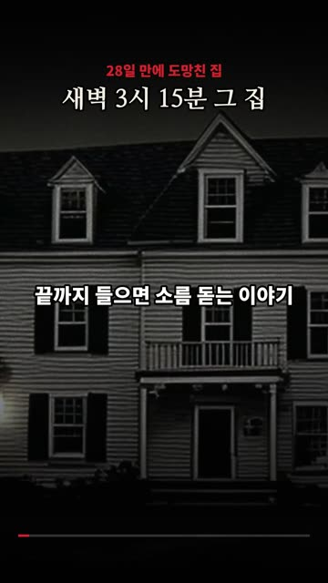
새벽 3시 15분 그 집 | 28일 만에 도망친 가족, 아미티빌 호러 실화 #shorts
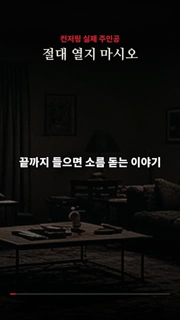
절대 열지 마시오 | 컨저링 실제 주인공, 애나벨 인형의 모든 것 #shorts
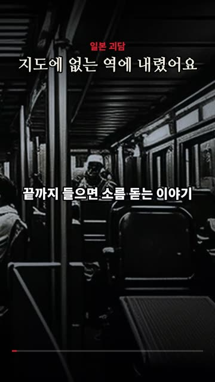
지도에 없는 역에 내렸어요 | 키사라기역 #shorts
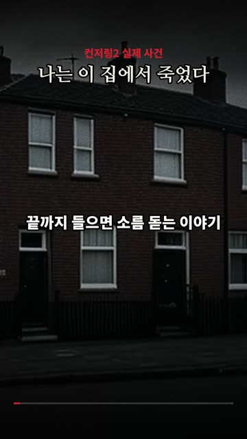
나는 이 집에서 죽었다 | 컨저링2 실제 사건, 엔필드 폴터가이스트 #shorts
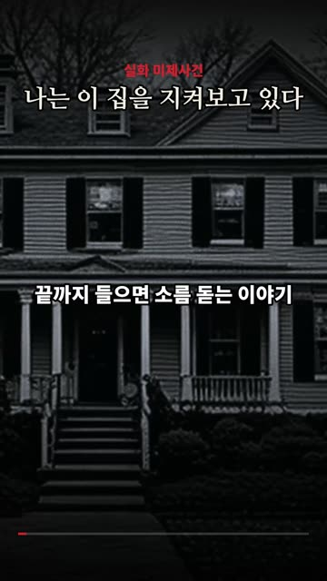
나는 이 집을 지켜보고 있다 | 지금도 못 잡은 '더 왓처' #shorts
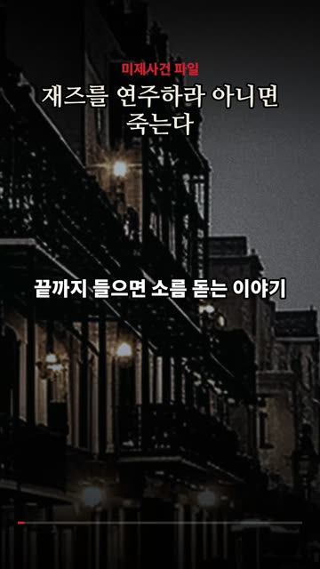
재즈를 연주하라 아니면 죽는다 | 뉴올리언스의 도끼남 #shorts
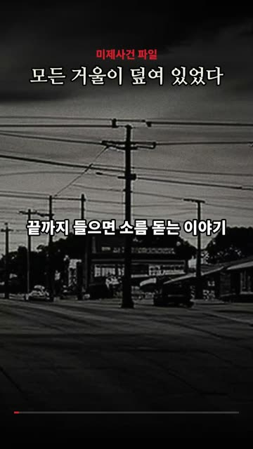
모든 거울이 덮여 있었다 | 8명이 잠든 채 사라진 빌리스카 도끼 살인 #shorts
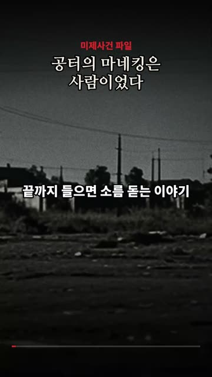
공터의 마네킹은 사람이었다 | 블랙 달리아 사건 #shorts
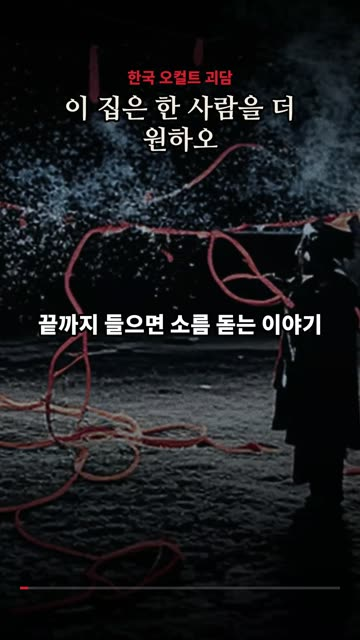
이 집은 한 사람을 더 원하오 | 살 맞은 집 #shorts
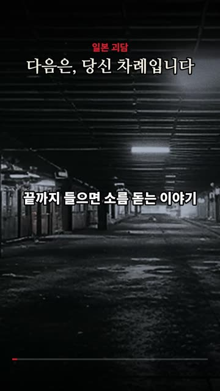
다음은, 당신 차례입니다 | 일본 괴담 '원숭이 꿈' #shorts
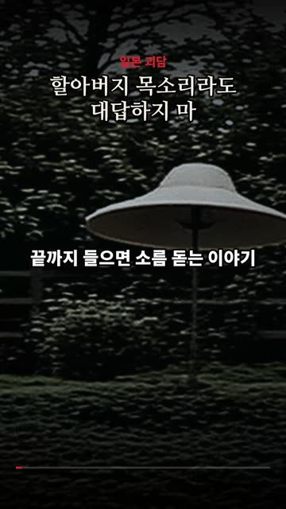
할아버지 목소리라도 대답하지 마 | 일본 최악의 괴담 '팔척귀신' 포포포 #shorts
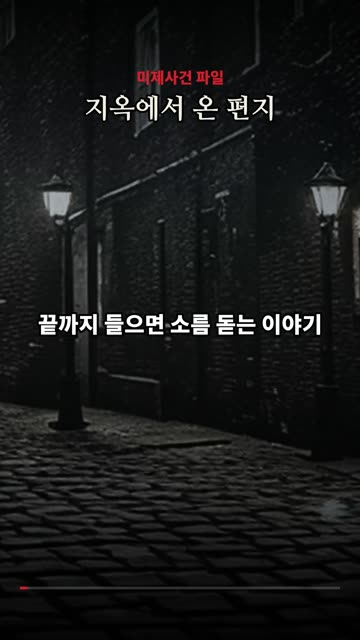
지옥에서 온 편지 | 130년째 정체불명, 잭 더 리퍼 #shorts
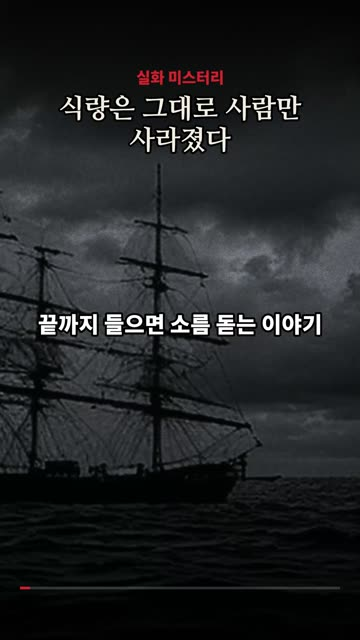
식량은 그대로 사람만 사라졌다 | 대서양의 유령선 메리 셀레스트호의 진실 #shorts
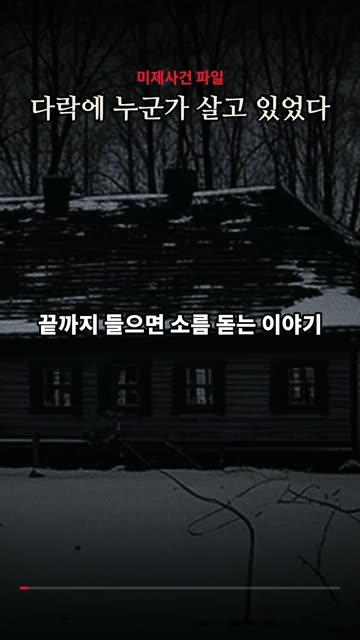
다락에 누군가 살고 있었다 | 다락에 숨어 살던 살인범, 힌터카이펙 일가 사건 #shorts
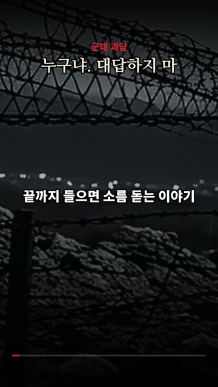
누구냐. 대답하지 마 | 군대 괴담 #shorts
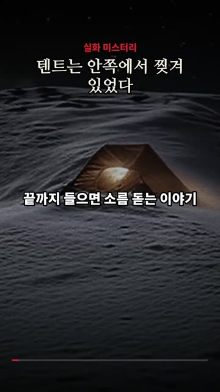
텐트는 안쪽에서 찢겨 있었다 | 디아틀로프 고개 사건, 아홉 명의 마지막 밤 #shorts
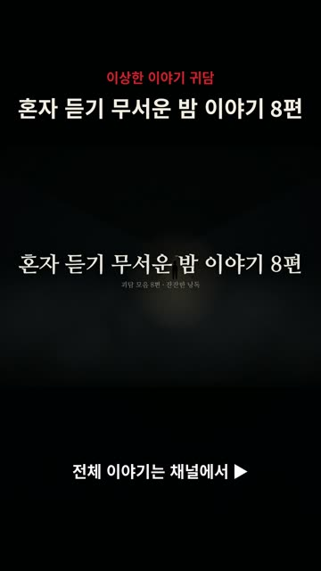
혼자 듣기 무서운 밤 이야기 8편 | 잠들기 전 괴담 #shorts #괴담 #무서운이야기
[괴담 모음] 잠들기 전 괴담 모음 8편 | 산길 터널·지하철·산장 대피소 | 잠들기 전 듣는 잔잔한 낭독 23분
[2ch 괴담] 야간 경비 일지 | 잠들기 전 듣는 잔잔한 괴담 낭독
[2ch 괴담] 돌아오지 않는 터널 | 잠들기 전 듣는 잔잔한 괴담 낭독
[2ch 괴담] 야간 편의점의 마지막 손님 | 잠들기 전 듣는 잔잔한 괴담 낭독
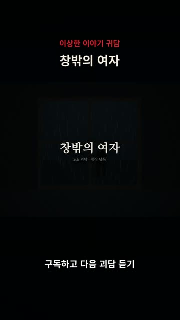